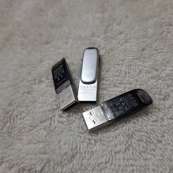

¿Cómo funcionan nuestros precios?
Cada compañía tiene necesidades similares (por ejemplo, un sistema de inventario, un sistema de pedidos, etc.), pero cada una tiene su propia forma de trabajar, y también hay pequeñas necesidades específicas que tal vez la hoja de cálculo que usas o el software que tienes no puede cubrir.
 La razón por la que muchos emprendedores no implementan tecnología
en sus negocios es el costo. Usan hojas de cálculo porque son
gratuitas, o utilizan software que no satisface sus necesidades, y
está bien porque, al final del día, es gratis. Pero, si hacemos
cuentas, podrían hacer más cosas, de manera más eficiente y generar
más dinero si tan solo implementaran un sistema que se adapte a sus
necesidades. Imagina que una aplicación realice las tareas fáciles y
comunes mientras tú te enfocas en lo que más importa y sacas
adelante el negocio.
La razón por la que muchos emprendedores no implementan tecnología
en sus negocios es el costo. Usan hojas de cálculo porque son
gratuitas, o utilizan software que no satisface sus necesidades, y
está bien porque, al final del día, es gratis. Pero, si hacemos
cuentas, podrían hacer más cosas, de manera más eficiente y generar
más dinero si tan solo implementaran un sistema que se adapte a sus
necesidades. Imagina que una aplicación realice las tareas fáciles y
comunes mientras tú te enfocas en lo que más importa y sacas
adelante el negocio.
Puedes usar lo que tenemos o puedes pedir ayuda
 En Tehuasoft, ofrecemos un conjunto de aplicaciones que cubren las necesidades más comunes de los emprendedores. Puedes usarlas directamente o pedirnos ayuda para adaptarlas a tus necesidades específicas. Nuestro objetivo es que puedas implementar la mejor tecnología en tu negocio sin que el costo sea un obstáculo. Abajo podrás ver los precios de cada aplicación, y si necesitas algo más específico, no dudes en contactarnos. Estamos aquí para ayudarte a encontrar la mejor solución para tu negocio.
Tabla de precios
Siempre recuerde nuestra promesa de venta: si el software es muy complicado de usar o no es lo que esperaba, lo modificamos hasta que esté satisfecho, sin costo adicional.
| Producto | Descripción | Precio |
|---|---|---|
| Análisis Ocho Regiones | ¿No sabe lo que necesita? ¿Sabe que necesita algo, pero no sabe qué? Realizamos un análisis exhaustivo de la compañía con nuestro avanzado método OR (Ocho Regiones) y entregamos un reporte detallado sobre los errores existentes, las áreas de mejora y las oportunidades de crecimiento. | Q.500.00 Cargo unico |
| Albán Flow | El software de Albán Flow le permite mantener su inventario en un lugar ordenado, limpio y visualmente agradable. Es muy fácil de usar y puede personalizarse en todos los aspectos. Lo mejor es que funciona tanto con conexión a internet como sin ella, en múltiples computadoras o en una sola. No importa cómo desee utilizarlo, Albán Flow resolverá sus problemas de inventario. | Q. 200.00 por mes + Q. 5.00 por usuario/computadora extra |
| Seguridad Atempa | La seguridad es importante, y si quiere que su empresa esté asegurada y, asimismo, que sus empleados estén capacitados para evitar problemas de phishing o situaciones similares, este servicio es para usted. Sus empleados recibirán capacitación y entrenamiento para prevenir problemas de seguridad informática, y su empresa estará protegida contra ataques de hackers. Desde la capacitación hasta cámaras de seguridad y control de datos, todo estará cubierto con Seguridad Atempa. | Q. 500.00 instalación + Q. 200.00 mensuales de soporte + Equipo necesario. Q. 600.00 por evento de capacitación. |
| Canal Blas | Ya sea un hospital, una distribuidora o un restaurante, la comunicación en tiempo real es crucial, tanto para pedidos como para consultas y actualizaciones de estado. Con Canal Blas, tenemos todo eso cubierto, ya que el avanzado software permite que todos los dispositivos de una empresa se comuniquen eficientemente entre sí. Ya no habrá necesidad de que la información llegue de forma física a otro lugar o de esperar: todo estará siendo actualizado en tiempo real. | Q. 500.00 por mes + Q. 5.00 por usuario/computadora extra |
| Etlanet | ¿Desea que su negocio esté en línea? Nosotros nos encargamos de absolutamente todo: creación de redes sociales, páginas, sitio web y hosting. ¿Quiere que nosotros manejemos el servidor? ¡No hay problema! ¿Prefiere montar su propio servidor? ¡Tampoco hay problema! ¿No sabe qué es un servidor? ¡No se preocupe, nosotros le enseñamos! | Q. 25.00 por mes + precios del host + precio de hardware a utilizar, instalación y capacitación. |
| Tequis Scalp | Servicios de informática forense avanzada. Ofrecemos análisis de dispositivos, análisis de datos, servicios de investigación, declaración en juzgados con muestras en tiempo real, entre otros. Todo lo necesario para extraer hasta el más mínimo dato de información de toda la evidencia que usted tenga. | Q. 8,000.00 Cargo único* + hardware necesario |
| Sierra Index | ¿Pensando en pasar todo el papel a la computadora? Ofrecemos servicio de digitación para que todo esté ahora en formato digital. Ya sea para que toda la información esté dentro de nuestra base de datos o para que usted tenga todos sus registros respaldados. | Q. 0.75 a Q. 40.00 por registro dependiendo complejidad y extensión |
| *Si desea explorar otras opciones con precios diferentes, comuníquese con nosotros, háblenos de su caso y veremos cómo ayudarle. | ||